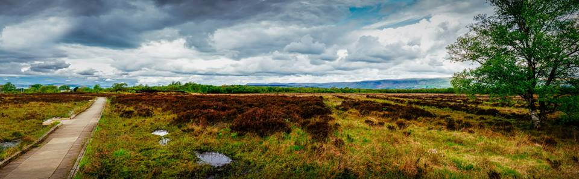
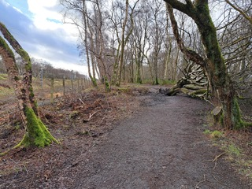
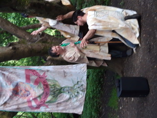

Events on Lenzie Moss
We email members details of walks and talks. Members receive priority for booking, but these are also open to non members and we give details of these on our Facebook page.

Habitat Management Works 2025
In Febuary 2025 East Dunbartonshire Council started work on the Moss to improve its wildlife habitats and protect the bog from erosion. These include:
The work is being underpinned by Scotland’s National Peatland Plan, which seeks to restore degraded peatlands such as Lenzie Moss to encourage the wide range of benefits provided by healthy peatlands, including a rich biodiversity, good water quality and carbon storage. As stores of carbon, peat bogs are supremely important in helping to tackle global warming.
For further enquiries contact East Dunbartonshire Council via www.eastdunbarton.gov.uk
Storm Eowyn January 2025
In January 2025 the longstanding whitebeam tree on the railway path succumbed to Storm Eowyn. For a short while it blocked the path until it was finally cut back and removed

Slide shows 2024 and 2025
During 2024 and 2025 we enjoyed presenting slide shows about different aspects of Lenzie Moss to local groups on its history, its wildlife, its role in global climate change, and how we can all help in its conservation.
2024 Lenzie Meadow Primary School pupils 2024 (The story of Lenzie Moss)
2025 the local Probus Club (The Story of Lenzie Moss),
2025 Lenzie Scouts (The Scottish Access Code and Lenzie Moss)
Summer solstice celebration June 2024
In June 2024 we celebrated the summer solstice with Corpores Infames - part of the 2024 Glasgow International Festival of Contemporary Art. This included a walk round the Moss, with the sharing of healing ungent for participants, and meditative chanting.

Fossorial Vole guided walk May 2024
In May 2024 Liz Parsons from Starling Learning gave us a very enjoyable walk on the Moss to learn more about the fossorial voles. We discovered that, when eating grass, the voles do not bite straight across the stem, but rather at an angle.
We also found out that their poo is about the same size as a Tic Tac, and coloured brown/green. It’s always useful to know what poo looks like! It’s not as shy as the animal. The voles are pretty good at hiding, being prey animals of kestrels and foxes, as well as being vunerable to humans, dogs and cats.
We then took Lenzie Meadow Primary School pupils on to the Moss to look at the voles’ new bunds and pools and to talk about the voles. Although it proved a somewhat rainy experience, the pupils got to examine how to detect the presence of the voles from their eating habits, burrow entrances and description of their poo.
Dawn Chorus Walk May 2024
In May 2024 Ranger Alan McBride took a group of 9 people on a guided walk to learn more about the birds on the Moss. After an introductory talk on why birds sing and the differences between bird song and bird call, Alan reported:
“We were able to listen to common woodland birds such as Wren, Blue tit, Great tit, Robin and Blackcap along the railway path, and on the boardwalk we were treated to excellent views of a breeding pair of Stonechat, hearing the familiar call the male makes resembling two stones being struck together. In the wooded section near Heather Drive, we heard two out of three migratory birds currently residing on the Moss, the Chiffchaff and Willow Warbler, both of which had made the journey to Lenzie Moss from Africa! Our final spotting was of a Kestrel hovering close by the rugby field which dived for a mouse and then landed on top of one of the rugby goal posts to eat it!”